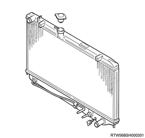
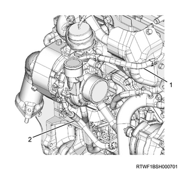
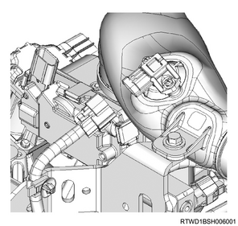
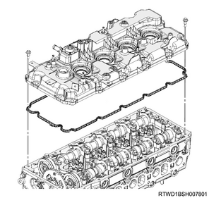
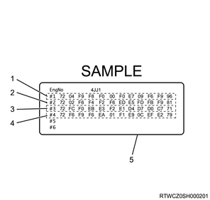

Injector removal (4JK1)
1. Injector safety information
Caution
- The holes and gaps constituting the fuel paths for the fuel system, including the inside of the injector, have an extremely precise finish. Therefore, entry of any foreign material may cause trouble.
- Be very careful to prevent entry of foreign material after removing parts, etc.
2. Battery ground cable disconnect
1. Open the engine hood assembly.
2. Disconnect the battery ground cable from the battery.
Caution
- Do not disconnect within 1 minute after turning OFF the ignition switch.
3. Coolant drain
1. Drain coolant from the radiator.
Note
- Open the drain plug at the bottom of the radiator.

2. Remove the radiator cap from the radiator.
Warning
- In order to prevent burns, do not open the cap when the engine and radiator are hot.
- Heat liquid and steam may gush out by pressure.
4. Engine cover removal
1. Remove the engine cover from the engine.

- Engine cover
5. Air cleaner assembly removal
1. Disconnect the harness connector from the MAF sensor.
2. Disconnect the harness connector from the barometric pressure sensor.
3. Disconnect the vacuum hose from the air cleaner assembly.
4. Disconnect the intake pipe from the turbocharger assembly.
5. Remove the air cleaner assembly from vehicle.

- Air cleaner assembly
- MAF sensor
- Vacuum hose
- Blow-by hose
- Intake pipe
- Barometric pressure sensor
6. Intake air duct removal
1. Remove the intake air duct from the turbocharger and the intercooler.
Note
- Remove the part together with the intake hose.

7. Turbocharger water feed pipe disconnect
1. Disconnect the turbocharger water feed hose from the water feed and return pipe.

- Turbocharger water feed hose
- Turbocharger water return hose
8. Exhaust manifold heat protector removal
1. Remove the exhaust manifold heat protector from the exhaust manifold.

9. Boost pressure sensor disconnect
1. Disconnect the connector from the boost pressure sensor.

10. Intake air duct removal
1. Remove the intake air duct from the intake throttle valve and the intercooler.
Note
- Remove the part together with the intake hose.

11. EGR pipe removal
Note
- The following applies to models with an EGR.
1. Remove the EGR pipe from the inlet manifold and the exhaust manifold.

12. Bracket removal
1. Disconnect the vacuum hose from the turbocharger control solenoid.
2. Disconnect the connector from the turbocharger control solenoid.
3. Remove the bracket from the cylinder head cover.

13. Vacuum pipe removal
1. Remove the vacuum pipe from the cylinder head cover.

Note
- Remove it as a set with the harness bracket. (for LHD models)

- Harness bracket
14. Injector disconnect
1. Disconnect the connector from the injector.
15. Fuel leak-off hose removal
1. Remove the fuel leak-off hose from the leak-off pipe.

- Fuel leak-off hose
- Injector connector
Caution
- Do not reuse the clip of the fuel leak-off hose.
2. Remove the leak-off pipe from the injector.

- Injector leak-off pipe
- Clip
Caution
- Do not reuse the leak-off pipe and the clip.
16. Blow-by hose disconnect
1. Disconnect the blow-by hose from the cylinder head cover.
17. Cylinder head cover removal
1. Disconnect the harness clip from the cylinder head cover.

2. Remove the cylinder head cover from the cylinder head.

18. Injection pipe removal
1. Remove the clip from the injection pipe.
2. Remove the injection pipe from the injector and the common rail (fuel rail) assembly.

Caution
- Do not reuse the injection pipe.
19. Injector removal
1. Remove the injector from the cylinder head.
Note
- Loosen the injector clamp fixing bolt to remove the injector clamp.
- If it is difficult to remove the injector, use a remover.
2. Remove the injector clamp from the injector.
Caution
- Cover the exposed portion to prevent foreign material from getting into the fuel system.
- Store the removed injector with the cylinder number on it.
- Take sufficient care not to hit the injector hole.
- Absolutely never touch the injector solenoids because that can hinder their performance or cause damage.
Note
- When replacing all injectors, remove the injector ID code label on the cylinder head cover.
- When replacing some of the injectors, erase the injector ID code label on the cylinder head cover using a pen, etc.

- Cylinder No. 1 injector ID code
- Cylinder No. 2 injector ID code
- Cylinder No. 3 injector ID code
- Cylinder No. 4 injector ID code
- Injector ID code label
3. Remove the gasket from the injector.
4. Remove the O-ring from the injector.